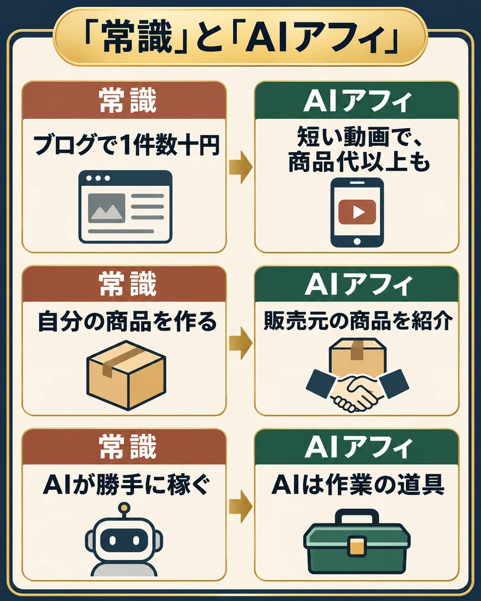

〇〇の答えは、TikTokの商品紹介。
短い動画で商品を紹介して、売れたら紹介料をもらう。これがAIアフィです。よく聞く「常識」とどこが違うのか、3つ並べてみます。

3つの違いを詳しく読む
常識
アフィリエイトは、ブログでコツコツ。1件数十円
楽天やAmazonのように誰でも使える紹介は、料率が数%のものが多い。1,000円の商品なら、料率2%で1件20円です。
AIアフィ
TikTokの短い動画で。1件で商品代と同じか、それ以上の案件も
扱うのは、紹介する人を限って出す「クローズド案件」。お試しの人が続けて買えば、販売元は2回目以降で回収できる。だから1件目の紹介料が高いんです。
常識
AI副業は、AIで何かを作って売る
自分の商品やスキルがないと始められない、と思われがちです。
AIアフィ
売るのは、販売元の商品
商品を作る必要も、在庫も、発送も、お客さんの対応もありません。やるのは、紹介する動画を作ることだけなんです。
常識
AIが勝手に稼いでくれる
ツールを入れれば勝手にお金が入る、なんて話ではないです。
AIアフィ
AIは、動画を作る手間を減らす道具
台本・字幕・編集の手間をAIで減らすので、会社員でも仕事のあとに回せる。ただ、何を誰に紹介するかは、自分で決めます。
お金の流れ：商品は販売元から届き、紹介料は販売元の広告費から。
あなた商品を紹介する
紹介リンク→
買う人商品と購入条件を見て買う
代金→
販売元商品を届ける
紹介報酬買う人の購入などが条件に合うと確認された後
買う人へ商品を届ける←
TikTokでは、プロフィールの紹介リンクや、動画の商品タグ（TikTokショップ）から買ってもらいます。
条件を満たした購入だと確認されると、紹介料が入ります。
AIに任せること、自分でやること。
AIで作れることと、売れることは別なんですよね。AIには「作業」を任せて、「判断」は自分に残す。僕はここをはっきり分けています。
AIに任せる作業
- 参考動画の文字起こしと、台本の言い換え
- 冒頭の一言の案出し
- 字幕づくり
- 商品ページの要点の整理
自分に残す判断
- 紹介する案件と商品を選ぶ
- 商品を自分で撮る
- 言っていることが商品ページと合っているか見る
- 数字を見て、次の一本を決める
試していない使い心地や、商品ページにない効果をAIが書いてきたら、僕はそこは使いません。盛って売れても、長くは続かないので。
3問で役割を確かめる。
顔出しは必要？
必須ではないです。ただ、他人の素材やAIの音声だけの動画は、TikTokで評価されにくい。
商品は自分で撮って、できれば自分の声で話す。これが基本です。
〇〇の答えは、TikTokの商品紹介。AIは手間を減らす道具で、何を誰に紹介するかは自分で決める。ここだけ押さえてください。